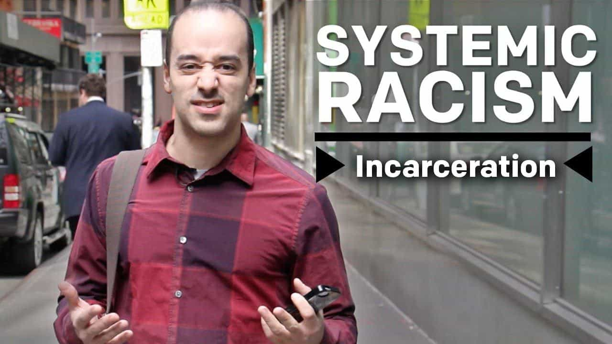
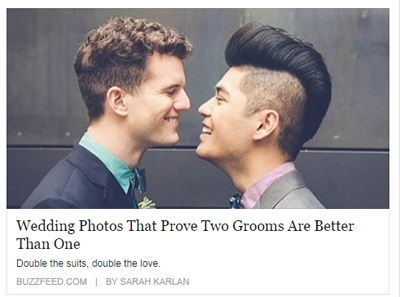

Writer. Filmmaker. Lover of cuckoo clocks. Email: harrylimerok @gmail.com.


As the cultural war rages on, the hypocritical left have managed to remain consistent on one thing: overusing their grab bag of buzzwords to the point these words have no internal meaning.
In actuality, leftist buzzwords are defined by their external effect—the emotional pitch in which they are expressed. In other words, the more passionate and angry one sounds uttering these words, the more correct they are assumed to be. For years, the media and popular culture have given the left carte blanche to employ this tactic.
By doing so, they have gotten intellectually lazy. Today, your typical leftist argument tends to cobble these buzzwords together into a string of sentences that, ultimately, contradict each other. In essence, the left have mainstreamed double-think.
Below are ten words you should more than faintly recognize. Let’s do our best to make these words great again…

“Systemic” is an important word for, as an example, understanding holistic human health and the root causes of illness and disease. It can be a handy word for broadly explaining how organizations operate at their core. Unfortunately, the left—particularly social activists—overuse the word to describe institutions they deem to be racist, homophobic, or sexist.
Broad statements can be useful when prefacing specific evidence, but these activists spout “systemic” as evidence in and of itself. Their trick is to use the word with extreme outrage in order to inflate its credibility as matter of fact. “Systemic” is deployed with a deliberate vagueness so a person cannot exactly prove or disprove it. Your only option is to try and shout louder than your opponent.
As The Daily Wire’s Ben Shapiro put it, vaguely saying there is “systemic” racism is like going to the doctor and saying “I hurt”.

The man on the left, Shaun King, claims to be black
There was a time when “trans” was a reliable prefix for “across or beyond”. It used to spice up the verbs written in an odd email or two. Sentences always read better with a little “transact”, “transpose”, or “transcript”. However, “trans” is commonly used as leftist shorthand for “transgender” and now “transracial” (see above photo). It is now difficult to hear the word without imagining some short-haired academic’s soft, belittling voice lecturing you on the importance of tolerating “non-binary” individuals.
By design, leftists use vague language and buzzwords to mask the shell game at the core of their ideology.
Funny how the left often say “we need to have a conversation about x” when they have proven time and again to be the least willing at conversing with conservatives. When the left say “conversation”, they really mean “we need to have a conversation about a topic you must agree with me on”. This allows them to control the parameters of the discussion and dismiss any deviation or counterargument as a “distraction”.
For instance, after the latest jihadist attack, the left will not engage in any “conversation” about Radical Islam. After an incredibly uncommon mosque attack, however, the left scramble to converse about “Islamophobia” and the radicalization of Western white men. The left have politicized the public forum and removed any intellectual honesty worthy of real “conversation”. It’s hard to have a “conversation” with a group of people who are only about acquiring moral and political power.
To be fair, this word was always kind of irritating. But, yes, some things in life are genuinely problematic (eg. you failed your midterm, you lost your job and your monthly rent is due, you lost your car keys). When it comes to political discussions, though, everything is so “problematic” to a leftist you start to wonder, “why even debate then if every idea you encounter is a problem?”
This is at the heart of why the left have become so averse to free speech: when confronted with a challenging idea, they dismiss it as “problematic” and attempt to shut it down instead of unpacking it deductively. Granted, at least this is a leftist’s nonviolent way of managing ideas that hurt their feelings.

There was a time when privilege was a good thing. The word opened speeches to express how honoured a speaker was to receive an award or call upon a respected guest. It was a humbling label one cherished and received with gratitude.
Now, privilege has been co-opted by the left as a shaming tactic to make you feel bad for having things or looking a way you cannot control. Way I see it: we should feel fortunate to live in a society with a playing field that allows for privilege. In many developing countries, next to no one has special advantages due to a lack of resources and free market. In the West, we should feel privileged to have privileges. It is proof we are the best.
The left always finds ways to trivialize mental illness. In reality, “phobia” is an actual anxiety disorder that induces irrational behaviour. Is it irrational to criticize the ideas of Islam (Islamophobic)? Is it irrational to criticize legislation that criminalizes the “misgendering” of someone (transphobic)? Is it irrational to criticize the influx of unassimilated migrants into Western Europe (xenophobic)?
Even if the left is using “phobia” figuratively and do not believe it literally causes anxiety in people with these opposing views, they still have to prove those arguments are irrational. Rather, leftist leaders use “phobia” to push political agendas and, in exchange, have allowed the Right to dismantle this idiotic term in the culture war. Unfortunately, allowing it to exist in the former is more dangerous than the latter.

Yes, tolerance is—was—a good thing. Sadly, the left—habitually compelled through some postmodern urge to distort value-based words until they have no moral standard—take “tolerance” as far as tolerating intolerance. If you criticize a minority’s cruel religious custom, you lack tolerance. If you criticize normalizing mental illness, you lack tolerance. Ironically, in a culturally and morally relative society, this form of politicized “tolerance” has become the new absolute.

Like Political Tolerance, “inclusive” has been utilized by leftist activists and institutions to legitimize any new self-proclaimed “identity” claiming marginalization and victimhood. However, when it comes to groups that do not share the left’s victimology or politics, inclusivity ceases to exist. Take the cop ban at Toronto’s Pride Parade or the shutdown of pro-lifers at last January’s Women’s March. Once again, leftists take well-meaning euphemisms like “inclusivity” and move its goal posts to accommodate and enforce their backwards ideology.
Globo-cuck and king of “tolerance” Justin Trudeau.
Diversity is a strength—when it comes to diversity of thought or diversifying your stock portfolio. The left, however, have hijacked “diversity” when describing their multicultural utopia. “Diversity of ethnicity” is now assumed to be a virtuous end in itself, irrespective of that group member’s own merits.
Embracing this type of diversity is simply reverse discrimination—including someone because they look a certain way or have a certain background that completes your multicultural furniture display. There is genuine “diversity”, but the word has been misappropriated by the left ad nauseam that it has lost its true value.

While the “Hitler” comparison to Trump has reduced itself to parody, its overuse reveals a key facet of the left: their rhetoric undermines the evils in the world they claim to crusade against. All this bluster about “Hitler”, “KKK”, “Rape Culture” is spouted so liberally—to forgive the pun—that it trivializes real Hitler (a fascist who annexed part of Europe and commanded the extermination of millions), real KKK (a Democrat-created secret clan that lynched blacks), and real rape culture (which has infested Western Europe via the international migration crisis).
As conservative commentator Gavin McInnes observed, due to the left’s infantile worldview “Hitler now just means a guy”.
And this is only scratching the surface…
What other words have The Left forever ruined?
Read More: 5 Buzzwords Liberals Use To Smear Dissidents